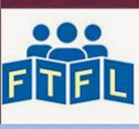

Newspaper Broke Taboos, Defying Threats and Violence
By DOREEN CARVAJAL and SUZANNE DALEY
 Charlie Hebdo was once firebombed, but it continued to amuse and horrify, taking pride in offending one and all.PARIS — In 2012, when Charlie Hebdo editors defied the government’s advice and published crude caricatures of the Prophet Muhammad naked and in sexual poses, the French authorities shut down embassies, cultural centers and schools in about 20 countries. “Is it really sensible or intelligent to pour oil on the fire?” asked Laurent Fabius, the foreign minister at the time.